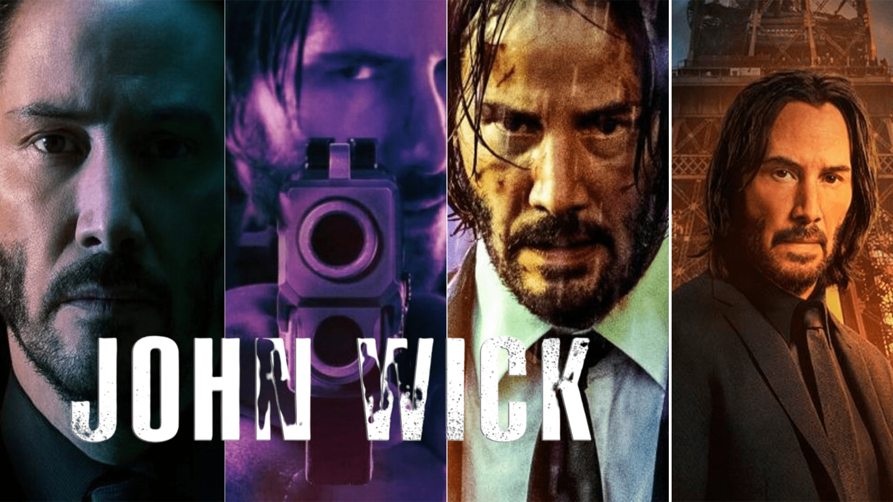

John Wick é um lendário assassino de aluguel aposentado, lidando com o luto após perder o grande amor de sua vida. Quando um gângster invade sua casa, mata seu cachorro e rouba seu carro, ele é forçado a voltar à ativa e inicia sua vingança.